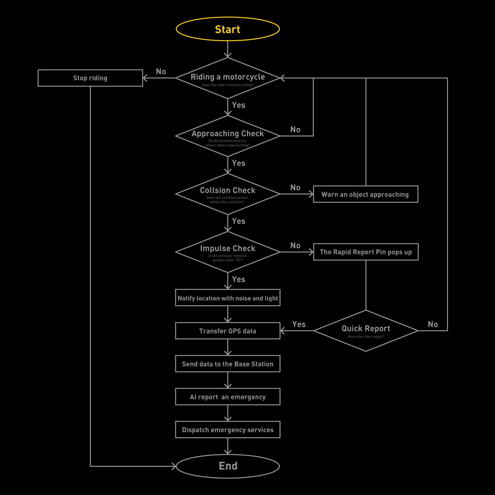
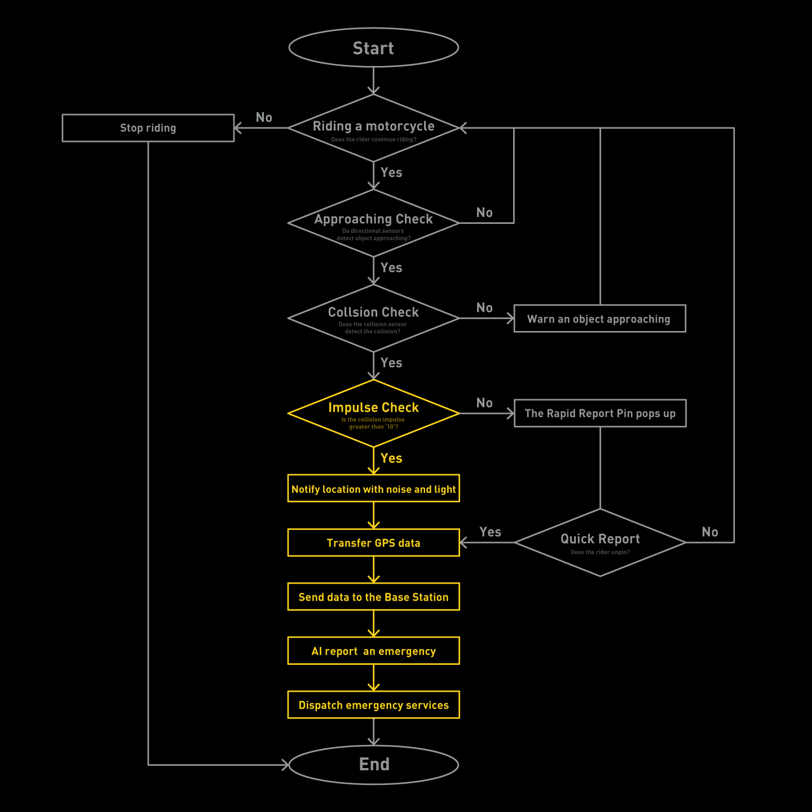
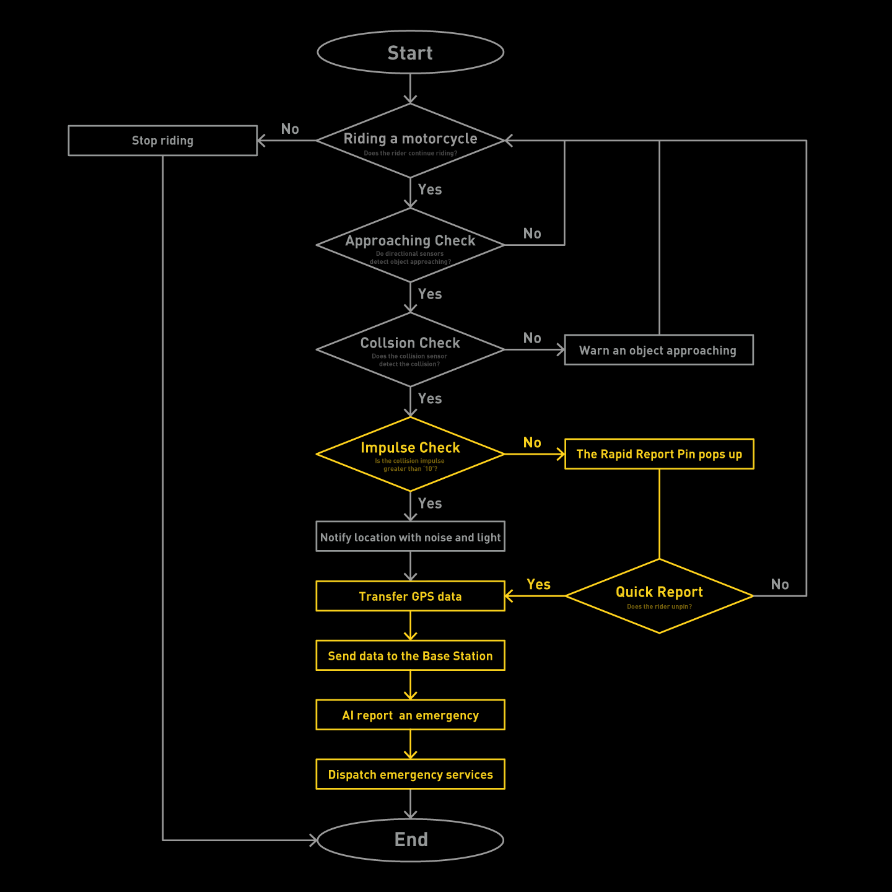
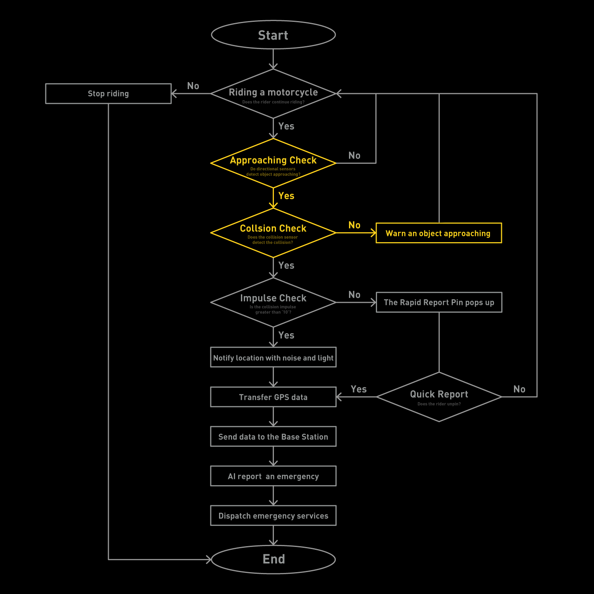
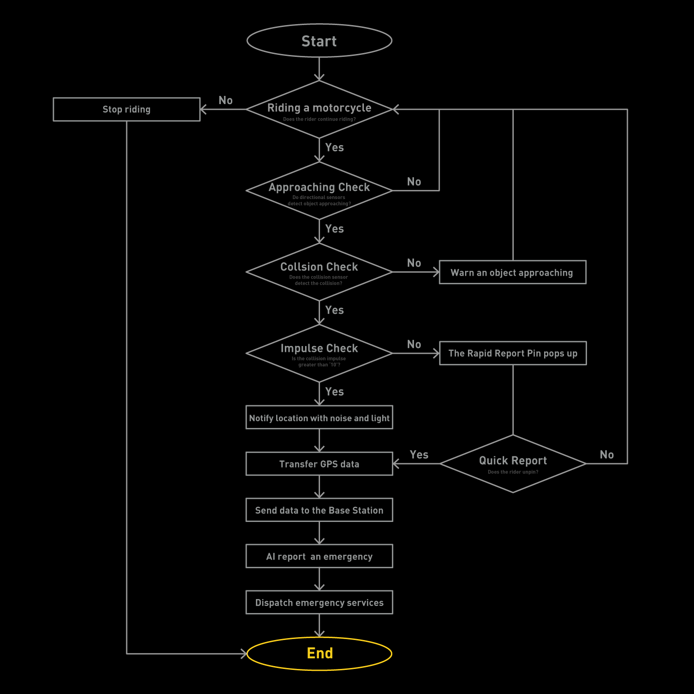

오토바이 E-call
KOPE
2021 Product & UI/UX | Team Project

SCROLL
오토바이 E-call
KOPE
2021 Product & UI/UX | Team Project
SCROLL


Brainstorm based on four questions from the research, and analyze the methods to attach devices to the motorcycle. The handlebar clamp-type was the easiest. Because most motorcycles have handlebars, the clamp-type can widely cover most vehicles. The riders do not want to drill holes in their motorcycles; therefore, they use double-sided tape to install a dashcam to the body-frame. KOPE will be attached to the vehicle using a handlebar clamp, and the rear LiDAR will be attached using double-sided tape.
We created the usability test using UX-research theory and asked experts to get data to revise the design decision. We decided to enlarge the screen and make interaction to make it more attractive and visible while driving. We took out unnecessary parts off and searched for a balance between form and function to make KOPE more intuitive. By providing more information, integrating with applications, KOPE visually displays how to automate the accident reporting process functions and processes to make it more credible.

Where should the rider go? Once he signs up for the KOPE app, he can get travel recommendations and the best places to visit by motorcycle.
Using big data, KOPE gives travel recommendations to the rider and suggests the path with a low accident rate.

The rider can check the weather condition via the app before departing. KOPE suggests the route not only based on the accident rate but also analyzing road conditions.
When there is a fatal crash and the KOPE detects impacts, it sends its GPS data to the base station and the public safety answering points to report the accident and send it to the emergency services to shorten the accident reporting process.
When the motorcycle goes off the road because of the accident, the rescue team would have difficulty searching for the rider.

KOPE notify its location by blinking.
Sound also helps the rescue team search for the rider. KOPE makes noise which allows them to find him easily.
When KOPE detects the fatal shock, it automatically sends its data and status to the police and emergency services. The automatization of accident reports allows the rider to be rescued in a golden hour.
When there is a crash, but it is not fatal, the rider might panic or be confused. He might have trouble contacting emergency safety services and communicating with them. In this case, KOPE’s pin pops up and he can unpin it for the emergency services. The system will send them location data. Also, he can use KOPE’s app to contact the designated contact information.
The rider unpinned for a quick report for emergency services.
The rider can set up shortcut emergency contact lists via the application.
The system will calculate the estimated arrival time for the emergency services.
When something approaches behind, KOPE’s LiDAR detects it and notifies the rider through sounding and blinking. It improves his awareness.
The rider does not want to drill holes on his motorcycle, so we decided to use double-sided tape, the most common way to install a dashcam on the vehicle, to attach the lidar on the rear part of it.

KOPE’s lidar detects the vehicle approaching from behind.

KOPE will notify the rider by blinking and sounding when something approaches from behind.
Once the rider arrives, he can take off KOPE and clip it to him. Therefore, he can also use it on the trip.
KOPE’s main device can be detached from the motorcycle and attached to the clip module.
The rider can carry KOPE with him while traveling. This feature was generated from the user feedback data. Because of concerns about theft, users wanted the device to be removable, and they wanted to use it on the way of the journey.